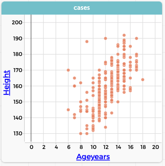

Statistical investigation
CODAP is a data analysis platform, so we expect it to help with statitical investigations. One simple example won’t do, however! School statistics covers a lot of ground, ranging from making simple graphs and calculations in primary school to doing statistical inference in high school and college.
The first article in AMEJ focuses on Exploratory Data Analysis, or EDA. This online page will let you explore that data in CODAP, and see what it’s like to use the tool yourself.
The live example below has the same data you saw in the article. Let’s make a couple of the graphs from the article!
- Click the
Graphicon on the toolbar to make a new, blank graph. It will be filled with random points.
To make a sensible graph, you have to organize the points. To do that, do what we always ask students to do: label your axes.
Label your axis by dragging a column heading to the horizontal axis in the graph. Try dragging
Favourite physical activity, which will be partly hidden.You cannot see all the activities! (You can see
OTHERon the right edge.) Stretch and move the graph and make it wide so you can see all the categories. (It does not have to be tall.)
So many possibilities! It’s hard to make sense of the graph. We made another column called simply activity that has only five possible choices. Maybe that will be simpler.
- Drag
activityto the horizontal axis, replacingFavourite Physical Activity. - Now let’s look at gender differences. Drag
Genderinto the middle of the graph and drop it there. The points colour by gender.
You should see some gender differences in activity preference. Do they make sense?
- For a different “look”: drag
Genderagain, this time to the vertical axis.
Graphing numeric data
Let’s look at how students grow over time.

- Use the fresh copy of our file, below.
- Make a new graph.
- Drag
Ageyearsto the horizontal axis andHeightto the vertical axis. You should see a graph like the one at right.
It’s clear that students are growing, but it doesn’t look the same as the graph in the article. It’s as if the points are hiding each other. How did we do make, basically, a bunch of parallel dot plots?
- Click on
Ageyearsto make a menu appear. - At the bottom of the menu, choose
Treat as Categorical.
When you do that, it’s as if you’re treating each age as a separate group, and it plots in a separate plot. Let’s add more features to the graph, as we did in the article.
- Go to the ruler “palette” at the right of the graph and under
Measures of Center, clickMeanto make the mean values appear.
The mean height is clearly increasing—at least from ages 10 to 15. Why do you suppose it’s not increasing at the ends of the graph’s range?
Perhaps there are not enough points to find a “stable” mean. We don’t want to delete data! But for clarity, let’s hide those troublesome points.
- Select all the points below 10 years old, and click on the “eyeball” palette on the right.
- Choose
Hide Selected Cases. - Do the same for the 16–18-year-olds.
How do we add box plots?

Return to the ruler palette, and under
Box Plot and Normal Curve, check theBox Plotitem.To get rid of the points, go to the paintbrush and make the point size go to zero.
Investigate other relationships by making other graphs, for example,
HeightagainstArmSpan1.
All of that lives in the realm of exploratory data analysis.
Of course, there is a great deal more you can do with CODAP in EDA! You can find answers to many questions using the help system; you can also read more and see more online lessons in the (free) book, Awash in Data.
A takeaway, we hope, is that CODAP gives you a tool and an environment that can serve students from the very first bit of EDA all the way through formal inference.
Footnotes
…which creates an opportunity for modelling with a function!↩︎